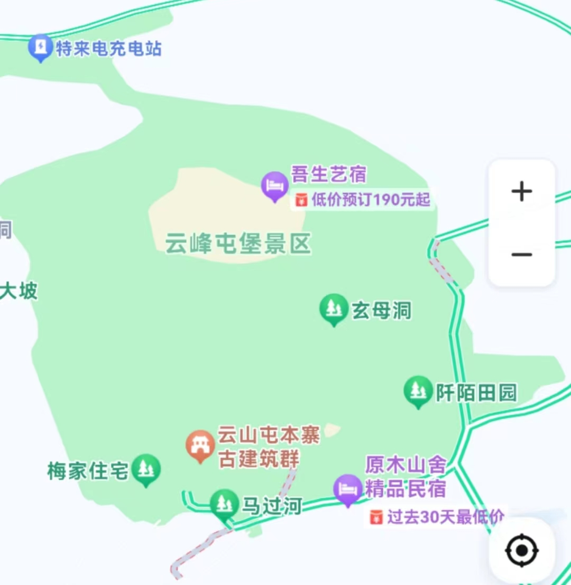
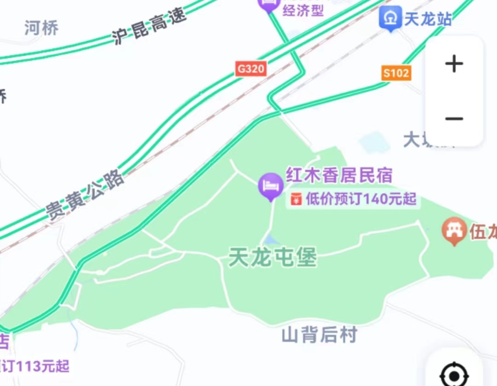

安顺屯堡文化区有300多个屯堡村寨，目前屯堡文化保存较完整的旅游点主要是安顺市西秀区七眼桥镇“云峰八寨”中的本寨、云山屯，平坝区的天龙镇。
云峰八寨云峰八寨位于贵州省安顺市西秀区七眼桥镇。

自驾：
·贵阳方向：沪昆高速-安紫高速，约1小时15分钟
·遵义方向：渝筑高速-沪昆高速-贵黄高速，约2小时50分钟
·毕节方向：杭瑞高速-厦蓉高速-赤望高速-安紫高速，约2小时45分钟
·六盘水方向：都香高速-沪昆高速-安紫高速，约2小时15分钟
·铜仁方向：杭瑞高速-江黔高速-江都高速-银百高速-沪昆高速-贵黄公路，约4小时55分钟
火车：·贵阳站-安顺站，约1小时15分钟；安顺站-云峰八寨，打车约30分钟
高铁：·贵阳北站-平坝南站，约20分钟；平坝南站-云峰八寨，打车约40分钟
天龙屯堡天龙屯堡位于贵州省安顺市平坝区天龙镇。

自驾：
·贵阳方向：沪昆高速-机场大道，约1小时
·遵义方向：渝筑高速-沪昆高速-机场大道，约2小时30分钟
·毕节方向：杭瑞高速-厦蓉高速-沪昆高速-机场大道，约2小时45分钟
·六盘水方向：都香高速-沪昆高速-机场大道，约2小时15分钟
·铜仁方向：杭瑞高速-江黔高速-江都高速-银百高速-沪昆高速-机场大道，约4小时45分钟